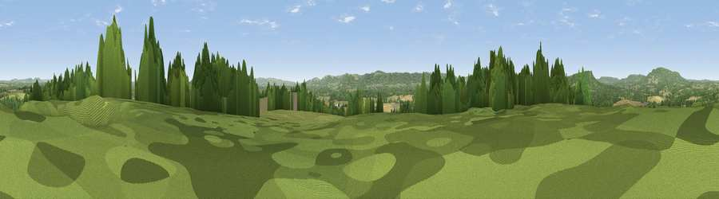

Upperton Common
#26652 in England · top 45% of its area beats it · near TillingtonThe view, rendered

A 360° render of this exact spot computed from the terrain model, tree cover and land cover — summer colours, afternoon light, calibrated against photographs of famous viewpoints. Real trees, hedges and buildings will differ in detail.
The panorama
Grey silhouette: terrain skyline in each direction (720 bearings, Earth curvature and refraction included). Dashed green: skyline with trees (+15 m) and buildings (+8 m) as obstacles. Blue strip: how far the ground is visible on each bearing.
Where the view opens
Wedge length = distance to the farthest visible ground on that bearing (vegetation-aware). Rings at 10, 25 and 50 km.
What fills the view
43% woodland · 37% grassland · 19% cropland ·
Angular shares of the visible panorama (visual magnitude), not map area. Landscape diversity 0.47 (0–1 Shannon).
Key numbers
More beautiful places nearby
The staircase of upgrades: each row has a higher view potential than everything closer. Driving times are estimates from straight-line distance, calibrated against real road routing — check an actual route before setting out.
| Place | Direction | Drive | Score |
|---|---|---|---|
| Viewpoint near Tillington | NNE · 1 km | ~2 min | 58.2 |
| Viewpoint near Lodsworth | W · 1 km | ~3 min | 58.6 |
| Viewpoint near Lodsworth | WNW · 4 km | ~9 min | 61.2 |
| Viewpoint near Lodsworth | WNW · 5 km | ~10 min | 65.1 |
| Viewpoint near Stopham | ESE · 7 km | ~14 min | 65.4 |
| Viewpoint near Fernhurst | NNW · 7 km | ~15 min | 75.1 |
| Barlavington Down | S · 8 km | ~15 min | 77.3 |
| Viewpoint near Cocking | SW · 9 km | ~18 min | 77.6 |
50.99916, -0.64078 · source: dobih hill · position refined by local search. Computed location — check access rights before visiting.